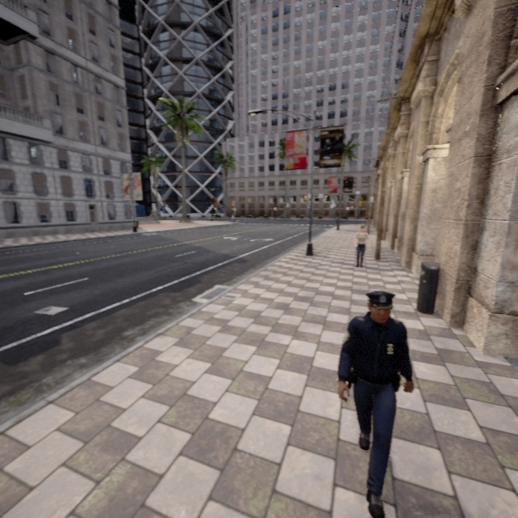
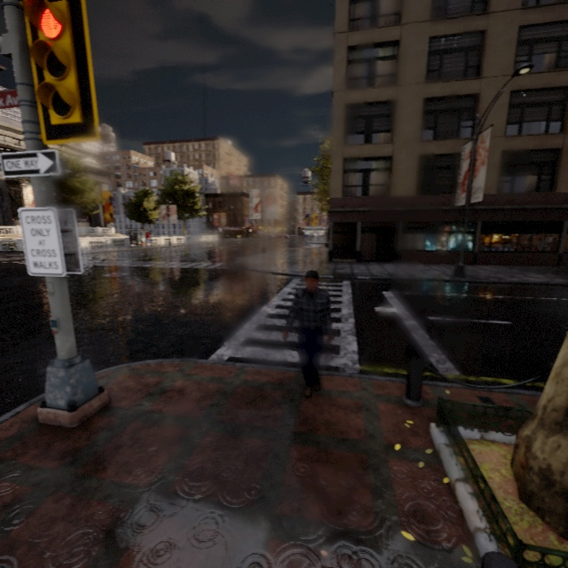
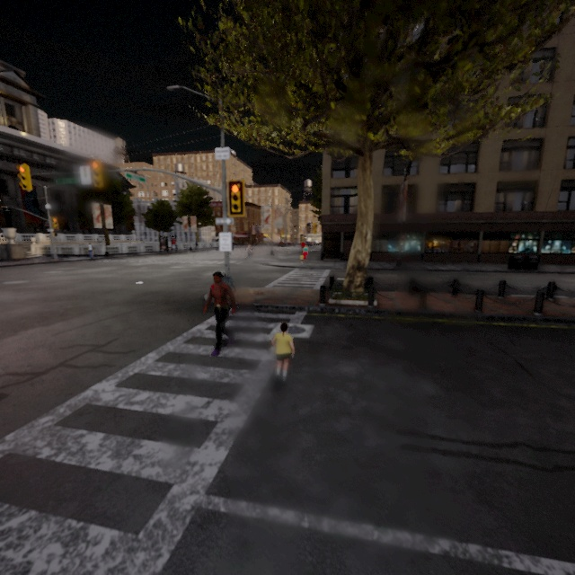
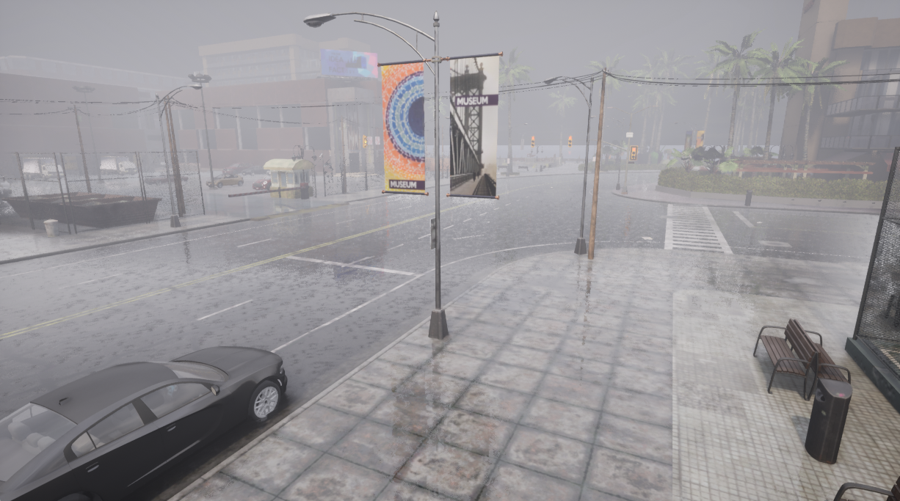
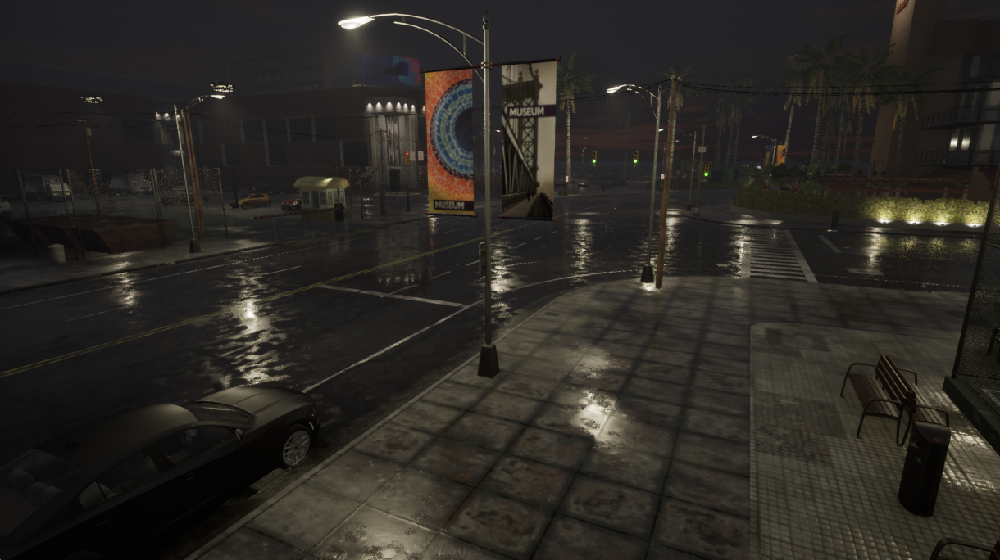
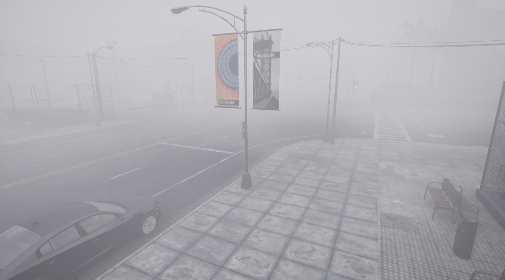
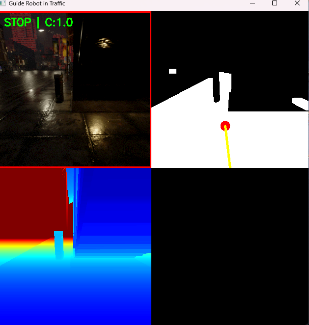

Research on Visually Impaired Assistance Algorithms Based on CARLA
2025
Overview
Constructed a complex traffic scene dataset incorporating diverse weather conditions and obstacle configurations using the Carla simulation platform. Deployed cameras to collect and annotate driving data. Enhanced the YOLOv11n lightweight object detection model and developed a visual semantic segmentation-based curb detection algorithm, enabling real-time safe-path planning and autonomous obstacle avoidance for visually impaired users in complex environments. This work provides a technical solution for environmental perception in intelligent mobile robots.
Visual Showcase
Carla Simulation Scenes







Obstacle Avoidance Demo
×